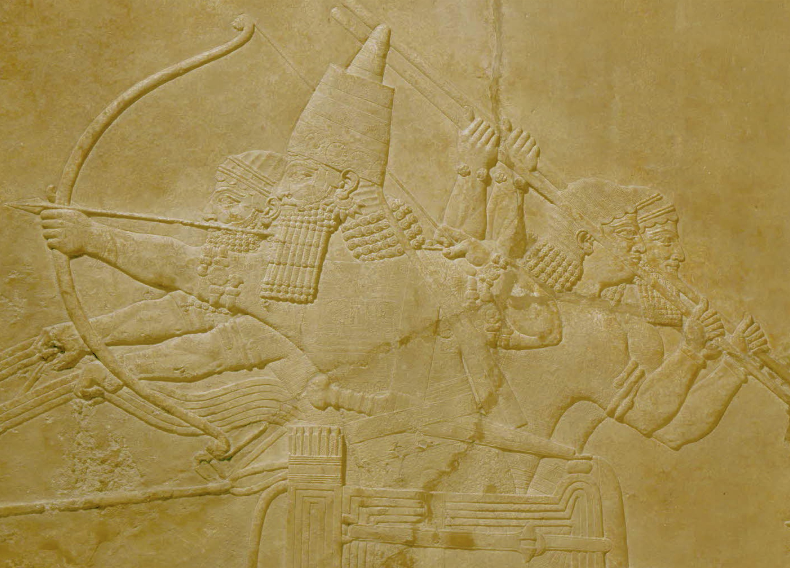
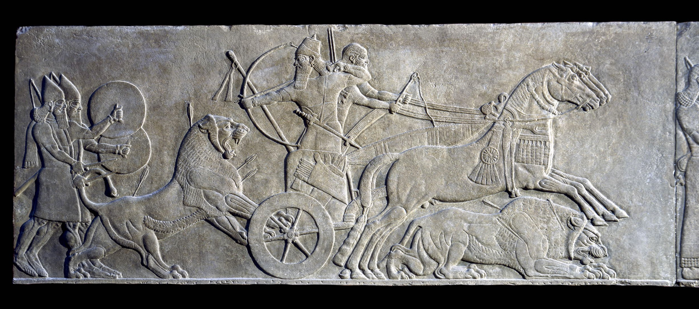
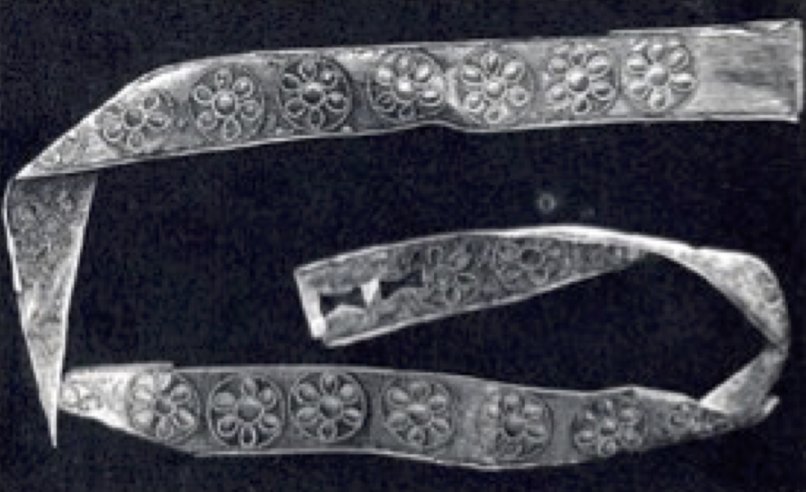
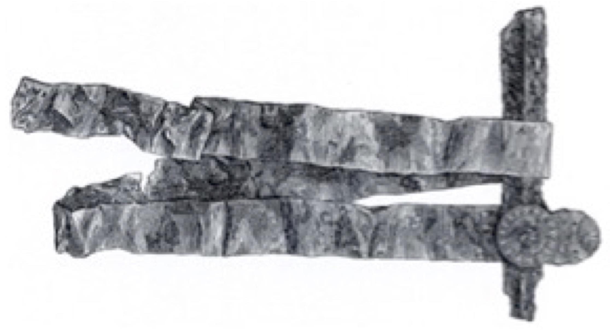

אָזֵן ’āzēn – equipment, weaponry
Semantic Fields:
Utensils
Author(s):
Panc C. Beentjes
First published: 2017-12-29
Last update: 2025-10-10 (Raymond de Hoop)
Citation: Panc C. Beentjes, אָזֵן ’āzēn – equipment, weaponry,
Semantics of Ancient Hebrew Database (sahd-online.com), 2017 (update: 2025)
(WORK IN PROGRESS)
Introduction
Grammatical type: noun masc.
Occurrences: 1x HB (1/0/0); 0x Sir; 0x Qum; 0x Inscr. (Total: 1)
- Torah: Deut 23:14.
1. Root and Comparative Material
A.1 Root. A connection with √ ʾdn which is always connected with hearing (> Hebrew אֹזֶן, אזן hiph.) is unlikely. Probably the א is a prosthetic alef (see below), so the best solution is to assume that the noun has to be vocalized as אְַזֵן rather than as (unattested) אָזֵן, as it is traditionally vocalized in Hebrew lexica, with the א forming an open semi-syllable.1 This opinion is already attested with early Hebrew lexicographers.2
A.2 Palmyrean Aramaic. Hoftijzer and Jongeling noted a word ʾzn of unknown meaning,3 in an inscription in archaic Palmyrean script (end first century bce),4 which has the attribute špyr, ‘beautiful’. It appears to be related to the erection of a statue of two persons to which the expression ʾzn spyr fits. It might suit a piece of armour like a baldric (cf. 6.3. Pictorial Material), which was often beautifully decorated (but this may be too speculative).
A.3 Official Aramaic. zyn2 / zn4, ‘weapon, armour’ in Elephantine papyrus Cowley 31:8: znyhwm, in the second draft of the letter to governor Bagohi of Yehud. In the first version Cowley 30:8 the first scribe had written tlyhm.5 tlyhm from the Semitic √tly suggests a hanging weapon or piece of armour (in Gen 27:3 most probably a quiver as part of Esau’s כֵּלִים [→ כְּלִי] ‘(hunting) equipment’).
A.4 Persian. Probably אָזֵן (אֲזֵן) was derived from Awestian zaēna, Old Persian *zaina, Pehlevi zēn,‘weaponry’.6
A.5 Postbiblical Hebrew. זֵן: ‘Waffe, eig. wohl Schmuck, s.w.u. Kriegsrüstung’, with reference to Arab. zayn ‘ornamentum’.7
A.6 Jewish Aramaic. זֵיְינָה: ‘weapon’.8 In TJ to Jer 5:16 and Isa 49:2 אֲזֵינָא is a rendering of Hebrew אַשְׁפָּה ‘quiver’, whereas in Isa 22:6 the same word is equated with Aramaic זֵינָה ‘weapon, weaponry’.9
A.7 Samaritan Aramaic. זיון, זין, זינה: ‘gear’.10
A.8 Syriac. zaynā: ‘arms, armour, weapons’;11 ‘arma’;12 zaynā ‘armure, armour’;13 zaynā ‘shield, armor, implements’.14
A.9 Classical Arabic. zayn: ‘ornament, finery’.15
A.10 Hurrian. If a word of non-Semitic origin and, perhaps, a loan of Indo-European provenance, also Hur. ziyani should be taken in consideration. It is attested as a determined noun or ablative: ziyan(i)=ni/e in the first tablet of the Hurrian-Hittite bilingue para tarnumar ‘Epic of Release’.16 It is also attested in the Ugaritic trilingual vocabulary Sa 46.1 HAL = hallu = ziyani = kurza’u ‘thigh, shank(-bone)’. Also a related or variant noun may be ziyari ‘side (of body, house)’.17 It is known that in Hurrian many words relating to horse-breeding and warfare have been adopted from ancient Indo-European stock. If so, it implies that the word (ʾa)zaynu* may have entered the West-Semitic world at a much earlier stage than the Persian period.
A.11 Rabbinical literature. Deut 23:14 is quoted in b. Yoma 75b where it is explained that the tool was only needed to cover up excrements produced by food that was bought from foreign merchants because the manna the Israelites ate normally was digested entirely. In b. Ket. 5a it is proposed to read בְּאָזְנֶךָ ‘in your ear’ which is then interpreted figuratively.
2. Formal Characteristics
[Discussion will be added later.]
3. Syntagmatics
[Discussion will be added later.]
4. Ancient Versions
a. Septuagint (LXX) and other Greek versions (αʹ, σʹ, θʹ):
- LXX Deut 23:14 (13) renders ἐπὶ τῆς ζώνης σου ‘on your belt’.18 LXX’s rendering suggests that the Hebrew text has been read (or interpreted) as עַל־אֲזֹרֶךָ (אֲזֹר‘girdle’). However, this interpretation might be a mere guess, since it is unlikely that a soiled tentpin would have been worn on the belt.
b. Samaritan Targum (TgSmr):
c. Peshitta (Pesh):
- As often, S seems to follow the Targumic tradition in translating עַל־אֲזֵנֶךָ as ‘l zynk, ‘on your equipment’.19 It is interesting that the important manuscript family of 9a1 has the variant reading ‘m ‘with (your equipment)’.
d. Targum (Tg):
- Some manuscripts of TO read אזנך, but the best text has ךניז.20 TN Deut. 23:14 has מאזני זייניכון. This would seem a conflated reading which attempts to reconcile the Aramaic with MT. Probably TPs-J has the better reading here: מאני זיניכון‘your war equipment’.21 The Targumists further explain their intention by אתר דתיסדון סייפוּכון‘the place where you fasten your swords’.22 So the Targumim are connecting אָזֵן with Aramaic זֵיְינָה, apparently regarding the א as prosthetic.
e. Vulgate (Vg):
* Deut 23:13 balteum, ‘girdle, belt’, apparently following LXX.
5. Lexical/Semantic Fields
[Discussion will be added later.]
6. Exegesis
6.1 Literal Use
A.1 The noun אָזֵן occurs in Deut 23:1423 only, where it is found within a passage about purity and cleanliness of the military camp (Deut 23:10-15). In this pericope two instructions are given. The first one (vv. 11-12) is rather vague: ‘When someone among you is unclean by reason of an accident of the night…’ (מִקְּרֵה־לָיְלָה). Though modern Bible translations (e.g. NEB; REB) have interpreted this expression as ‘an emission of seed’, it is not the most probable solution, since ‘emission of seed’ is elsewhere characterized as שִׁכְבַת־זָרַע(Lev. 15:16). Therefore, מִקְּרֵה־לָיְלָה in Deut 23:11 should be considered a more general term: every kind of accident related to impurity that could happen at night. The second case discussed in Deut 23:10-15 concerns a specific instruction on easing oneself (vv. 13-15). This has to be done (1) at a special place (יָד[v. 13]24) outside the camp and (2) with a specific tool. One has to scrape ( חפר qal) a hole with a tentpeg or pin (→ יָתֵד) in order to cover the excrements.
A.2 The instruction in Deut 23:14 is rather peculiar, as ‘there is no Biblical reference to the effect that human excrement defiles’.25 It is therefore motivated in Deut 23:15 as having a theological, rather than a practical background: God’s presence in the camp requires purity. J. Tigay writes, ‘it may be objectionable in God’s presence simply because it is filthy and repugnant. However, Ezekiel’s objection, as a priest, to eating food cooked over human excrement as fuel may indicate that it was regarded as impure in some contexts (Ezek 4:12-15)’.26 The proximity of the preceding verses, especially v. 11, argues in favour of this interpretation.
A.3 It is the apposition עַל־אֲזֵנֶךָ in Deut 23:14 that poses a problem, mainly because the noun אָזֵן is a hapax legomenon in the Hebrew Bible, though it is not listed as such in either Cohen, BHL, or Greenspahn, HLBH. The preposition עַל can have many meanings,27 but in view of the fact that the יָתֵד came into contact with excrements it is unlikely that the meaning would be ‘among, with’ or ‘on, over’ here. The preposition could mean ‘in addition to, besides’,28 implying that it should be kept apart from אֲזֵֶנֶךָ, probably a generic term for ‘(military) equipment, weapons’.
6.2 Figurative Use
A.1 Not attested.
6.3 Pictorial Material
A.1 If אֲזֵן was a general term for weaponry and armour, it is difficult if not futile to search for relevant examples in the vast iconographic resources of the art of warfare in the ancient Near East. If, however, it may be assumed that as a hapax legomenon the word designated a rare piece of equipment, or was a rare term for a specific piece of armour such as a kind of baldric hanging from the girdle or a shoulder-belt, it is rather easy to provide examples of them from ancient Near Eastern iconography. We display one example of each. First, the often beautifully decorated Persian ‘akinakes’ or short sword from the southern ‘Treasury Relief’ at Persepolis (Figure 1). The decorated leather scabbard is here hanging from the girdle connected to it by a single metal device.29

Figure 1: Short Persian sword or akinakes from Persepolis with leather scabbard attached to the girdle (Courtesy of the Oriental Institute of the University of Chicago)

Figure 2: Assyrian relief: Ashurbanipal30 hunting lions (©Trustees of the British Museum).
Baldricks or shoulderbelts made from leather straps hanging over the right shoul- der slanting to the left, are known since the Late Bronze Age. They also appear frequently in the Neo-Assyrian-Babylonian and Persian period. Compare, for in- stance the two reliefs which show king Ashurbanipal (668-ca 627 v.Chr.) and king Ashurnasirpal II (883-859 v.Chr.) hunting lions (Figure 2; Figure 3).31 [M. Dijkstra]

Figure 3: Gypsum Assyrian relief: Ashurnasirpal II hunting lions (©Trustees of the British Museum).
6.4 Archeology
A.1 A large number of different types of Assyrian and Persian swords, usually made from bronze alloys, have been found in excavations all over the ancient Near East includ- ing Palestine and are nowadays on display in museum collections.32 Also often the remains of the golden and silver adornments of the ornamented hilts and scabbards have been unearthed.33 These material remains complete nicely the iconographic records cited above. Unfortunately, the leather parts of the scabbards and straps of the belts and baldrics perished except for an occasionally preserved bronze ring, buckle or some small floral ornaments adorning these parts of the weaponry. As early as about 1500 BCE in shaft-grave V at Mycenae (Greece) the golden adorn- ments of a bronze swords scabbards and baldrics were found, which are examples of how a beautiful and a precious baldric could look like in the ancient Near East (Figure 4). Near a long bronze sword, a golden shoulder-belt was found. The strip gold was about 130 cm (4 ft.) long and about 3 cm (1 3/4 in.) broad. In the extremity of the shoulder-belt are two perforations; at the other end there has probably been a clasp, because no perforations are present. Near this shoulder- belt a gold decorated disk similar to the ones covering the sword’s scabbard was also found. Many of such round golden and silver floral plates have been found all over the ancient world. These golden belts were the covering decorative element of leather baldrics used for the sword’s scabbard suspension.34 [M. Dijkstra]

Figure 4a: Golden strap from baldrick found in Mycenae (ca 1500). (Courtesy of the National Archaeological Museum Athens)

Figure 4b: Golden straps from baldricks found in Mycenae (ca 1500). (© unknown; picture in Salimbeti s.a.)
7. Conclusion
A.1 The word is a hapax legomenon, perhaps borrowed from an Indo-European language. If a relationship be accepted with Hurrian ziyani and ziyari, it may have entered the West-Semitic languages in the Bronze Age. According to the Septuagint and the Vulgate the apposition עַל־אֲזֵנֶךָ in Deut 23:14 refers to a specific spot (‘on your girdle’) or a special piece of equipment to attach the scabbard for sword or dagger to a girdle or a shoulder-belt (baldrick, the Roman balteus). The same kind of equipment is also supposed to carry the special → יָתֵד‘tentpin’ used when leaving the camp towards the special place to ease oneself.
A.2 Some considerations argue in favour of a more general, collective meaning of the word. This more general meaning ‘equipment, weaponry’ has been preserved in Official Aramaic, Persian, Postbiblical Hebrew, Targumic Aramaic, and Syriac. Though the context does not provide conclusive evidence to decide which of these two options is correct, a specialized meaning such as a ‘baldrick’ seems to be preferable because of the fact that it is a hapax legomenon in the Old Testament Hebrew, i.e. a rarely used term. Another possible solution is to translate ‘in addition to your equipment’ which would imply that it should be kept apart from the other gear because of its hygienic use. Though not defiling in the strict religious sense, and obviously cleaned when used and carried around for sanitary purpose attached to a belt like the other weaponry, it was still regarded repugnant in the presence of God.
Bibliography
For the abbreviations see the List of Abbreviations.
Alonso Schökel, DBHE, 32: ‘Ajuar, equipo’.
BDB, 24: ‘implements, tools’.
H.R. Cohen, Biblical Hapax Legomena in the Light of Akkadian and Ugaritic (SBL.DS, 37), Missoula 1978.
J. Cantineau, ‘Tadmorea,’ Syria 14 (1933) 169–202.
DCH, vol. 1, 171: ‘perh. collective, tool(s) or weapons’.
R. le Déaut, Targum du Pentateuque, t. 4: Deutéronome (Sources Chrétiennes, 271), Paris 1980.
A. Díez Macho, Neophyti I: Targum Palestinense MS de la Biblioteca Vaticana, vol. 5: Deuteronomio, Madrid 1978.
M. Dijkstra, ‘The First Tablet of the Hurritic Bilingual Song of Release in the Light of Hurritic Mythological Tradition,’ UF 44 (2013) 121–42.
GB, 21: ‘unsicheres Wort: Waffen’.
HAHAT, 30: ‘Etymologie unsicher: Geräte’.
HALAT, 27:‘Ausrüstung (?)’.
HAWAT, 10: ‘Gerät’.
HCHAT, 48: a very elaborate treatment, resulting in the translation ‘Geräth, Werkzeug’.
HLBH, F.E. Greenspahn, Hapax Legomena in Biblical Hebrew (SBL.DS, 74), Chico 1984.
HWAT, 21: ‘Werkzeug’.
KBL, 25: ‘Gerät, tools’.
LHA, 28: ‘arma’ (Zorell renders: ‘praeter arma tua’).
MHH, 22: םתוס(unclear).
E. Neu, Das hurritische Epos der Freilassung I: Untersuchungen zu einem hurritisch-hethitischen Textensemble aus Hattuša, (SBoT 32) Wiesbaden 1996.
B. Porten (ed.), The Elephantine Papyri in English: Three Millennia of Cross-Cultural Continuity and Change (DMOA, 22), Leiden 1996.
J. Reade, Assyrian Sculpture, London 1983.
Th. Richter, Bibliographisches Glossar des Hurritischen, Wiesbaden 2012.
A. Salimbeti, ‘The Greek Bronze Age: Swords/Daggers’ Salimbeti.com.
A. Sperber, The Bible in Aramaic Based on Old Manuscripts and Printed Texts (4 vols.), Leiden 1959–68.
E. Stern, Archaeology of the Land of the Bible, Vol. II: The Assyrian, Babylonian and Persian Periods (737-322 B.C.E.), (ABRL) New York etc. 2001.
J.H. Tigay, Deuteronomy: The Traditional Hebrew Text with JPS Translation (JPS Torah Commentary), Philadelphia (PA) 5756 / 1991.
TLB, vol. 1, 61: Meaning uncertain.
TPC, 60: ‘supellex’ (utensils, stuff).
A.S. van der Woude, ‘ יָד, yād, Hand,’ THAT, Bd. I, 667-674.
M. Weinfeld, Deuteronomy and the Deuteronomic School, Oxford 1972, 238.
-
cf. Joüon & Muraoka, GBH, § 88a. ↩
-
cf. Fürst & Ryssel, HCHAT, 48. ↩
-
Hoftijzer and Jongeling, DNWSI I, 26. ↩
-
Cantineau 1933, 190–91. ↩
-
Hoftijzer and Jongeling, DNWSI I, 309; Grelot, DAE, No 102; Porten 1996, 139–47. ↩
-
cf. HAHAT, 30; Sokoloff, SLB, 378. ↩
-
Levy, WTM, Bd. 1, 528. ↩
-
Sokoloff, DJPA, 175; DJBA, 410. ↩
-
cf. Levy, CWT, Bd. 1, 18. ↩
-
Tal, DSA, 276. ↩
-
Payne Smith (Margoliouth), CSD, 115. ↩
-
Brockelmann, LS, 195. ↩
-
Costaz, DSF, 87. ↩
-
Sokoloff, SLB, 378. ↩
-
Lane, AEL, 1279-80. ↩
-
KBo 32,67 IV, 8’; Neu 1996, 527; Dijkstra 2013, 135–36. ↩
-
see Richter 2012, 367, 371. ↩
-
GELS-L, 195: ‘girdle, belt’; GELS-M, 316: ‘girdle’. ↩
-
Payne Smith [Margoliouth], CSD, 87: ‘armour’; Brockelmann, LS, 195: ‘arma’; Costaz, DSF, 87: ‘armure, armour’; Sokoloff, SLB, 378: zaynā ‘shield, armor, implements’. ↩
-
Sperber, BiA, vol. 1, 329. ↩
-
Díez Macho, Neophyti, vol. 5, 193: ‘vuestros equipos de armes’; Le Déaut 1980, 188: ‘vos équipements d’armes’. ↩
-
Le Déaut 1980, 189: ‘l’endroit où vous attachez vos glaives’. ↩
-
There is a difference between the numbering of verses in MT (Deut. 23:10-15) and V (23:9-14), whereas the latter is followed in a number of older translations, like e.g. KJV, NRSV, NEB, StV, NBG; newer translations are according to the numbering in MT: JPS, NBV. ↩
-
see Van der Woude 1978, 669. ↩
-
Weinfeld 1972, 238. ↩
-
Tigay 1996, 214. ↩
-
cf. DCH, vol. 6, 385–98; opting for ‘with’, 392b. ↩
-
DCH, vol. 6, 392a. ↩
-
see also ANEP, 11, 463. ↩
-
Note that the shoulder strap from which the sword is hanging, here also is secured inside his girdle! ↩
-
Both reliefs are displayed in the British Museum, see Reade 1983, Figs. 33; 80, 81; further: Figs. 79, 96; ANEP, Nos 184, 441, 185, 235; see also AOB, No 380; ANEP, No 651, and BRL2, 61 the winged deity; another Persian example ANEP, No 11; other examples from Zincirli ANEP, No 49 and Neo Hittite Kargemish ANEP, No 461. ↩
-
See also Stern 2001, 531. ↩
-
Usually subsumed under jewellery. Perforations and small ringlets on the edges show however that they were ornaments sewn on clothes, or attached on leather and cloth belts and other objects. ↩
-
Salimbeti s.a. For examples of archaeological remains of such equipment from Palestine, see BRL2, 61. ↩